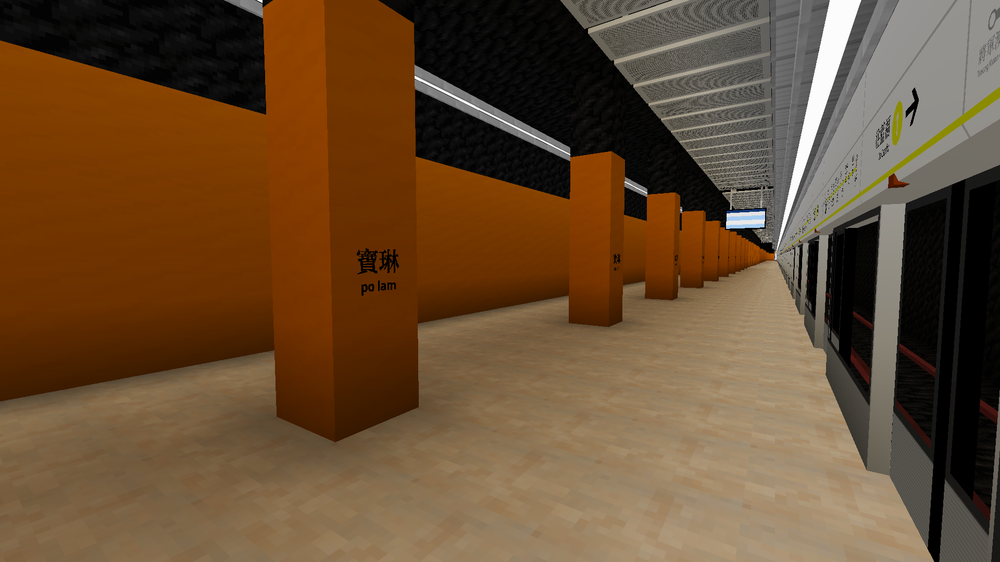
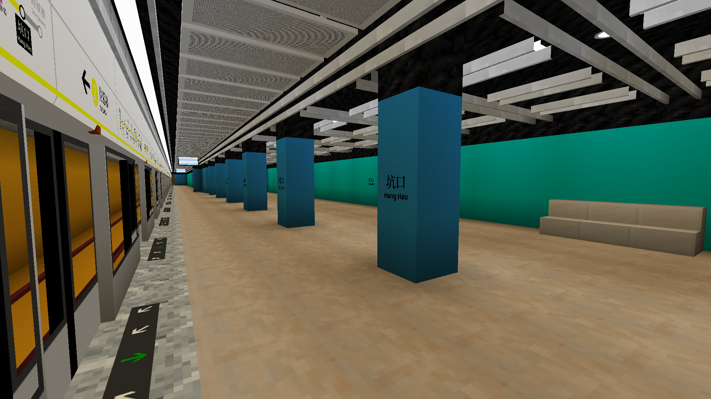
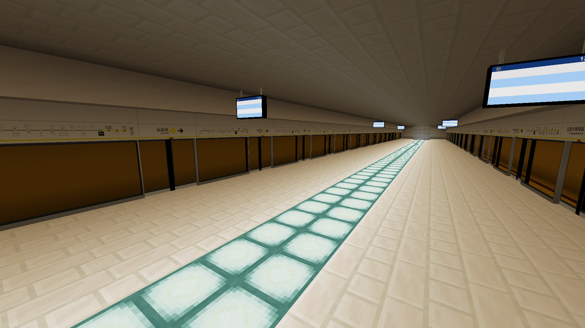

    kester0312.github.io
    
    
    <html>

        <head>
	        <link rel="shortcut icon" href="favicon.ico" />
            <link rel="bookmark" href="favicon.ico" />
	        <meta charset="UTF-8"/>
            <title>麥塊藍月光</title>
        </head>

        <body>
            <div>
                <header style="background-color:rgb(0, 213, 255);position:fixed;left:-10px;top:0px;width:101%;overflow:hidden;height:70px">
                    <a href="index.html" title="home"></a>
                    <a href="index.html" title="藍月光鐵路"></a>
                    <a href="https://discord.gg/GGsMq7Kzj7" title="藍月光鐵路DC"></a>
                </header>
            </div>

            <br></br>
            <br></br>
            
            <div>
                <header style="background-color:rgb(255, 255, 0);color: rgb(255, 187, 0);" align="center";>
                    <h1>藍月光港鐵站</h1>
                    <h2>外表細小，內部卻非常大</h2>
                    <h3>線路：藍月光綫、鑽石綫</h3>
                    <h3>連接的站：香港</h3>
                     
                    
                    <br></br>
                    <h1>除了巨大，他還連接了香港站</h1>
                    
                </header>
            </div>

            <div>
                <header style="background-color:rgb(255, 230, 197);color: rgb(0, 17, 255);" align="center";>
                    <h1>香港港鐵站</h1>
                    <h2>內部非常大</h2>
                    <h3>線路：東涌線、機場快線</h3>
                    <h3>連接的站：藍月光</h3>
                     
                    
                    
                    <h1>我們還做了寶琳、坑口、將軍澳</h1>
                </header>
            </div>

            <div>
                <header style="background-color:rgb(255, 145, 0);color: rgb(117, 216, 103);" align="center";>
                    <h1>寶琳港鐵站</h1>
                    <h2>一個只有單邊月台的站</h2>
                     
                </header>
            </div>

            <div>
                <header style="background-color:rgb(0, 183, 255);color: rgb(255, 115, 0);" align="center";>
                    <h1>坑口港鐵站</h1>
                     
                     
                </header>
            </div>

            <div>
                <header style="background-color:rgb(255, 0, 0);color: rgb(255, 255, 0);" align="center";>
                    <h1>將軍澳港鐵站</h1>
                     
                     
                    <h1>我們還做了學校</h1>
                </header>
            </div>
            
            <div>
                <header style="background-color:rgb(255, 145, 0);color: rgb(0, 255, 234);" align="center";>
                    <h1>藍飯港鐵站</h1>
                    <h2>藍月光飯團學校</h2>
                     
                     
                     
                     
                </header>
            </div>


            <div>
                <header style="background-color:rgb(235, 196, 0);color: rgb(255, 255, 0);" align="center";>
                    <h1>免費工具:</h1>
                    <h2>BML OS</h2>
                    <a href="BML OS/index.html" title="BML OS"></a>
                    <h2>網上計算機</h2>
                    <a href="calculator/index.html" title="網上計算機"></a>     
                </header>
            </div>

            <div>
                            <script>
                function Num()
                {
                    document.getElementById("field1").value=Math.floor(Math.random()*11)
                }
            //</script>
            <h1 style="background-color:rgb(0, 213, 255);" align="center">
                <button onclick="Num()">隨機數0-10 </button> 
                <input type="text" id="field1">
                <br></br>
            </h1>
        </div>


            </h1>
        </body>
    </html>

